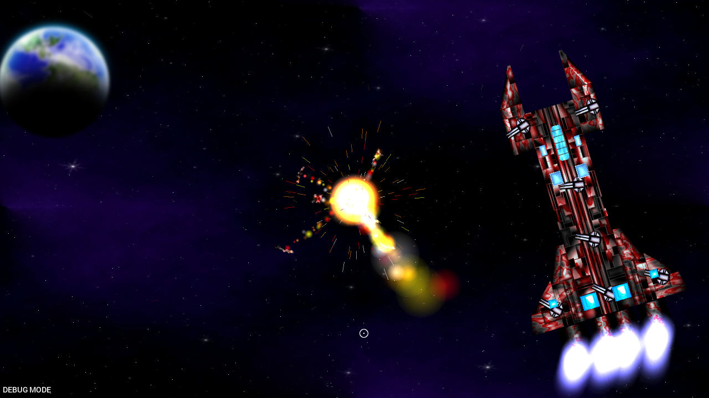
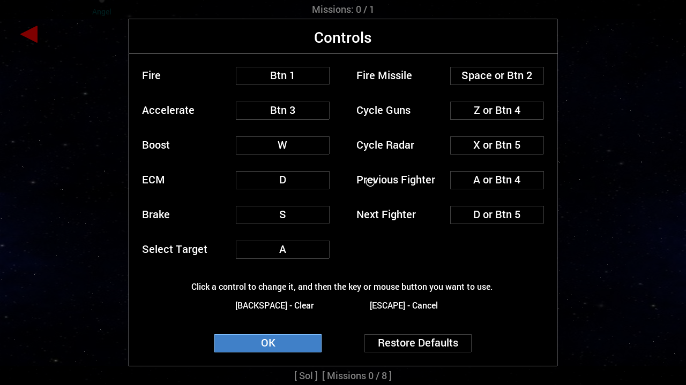
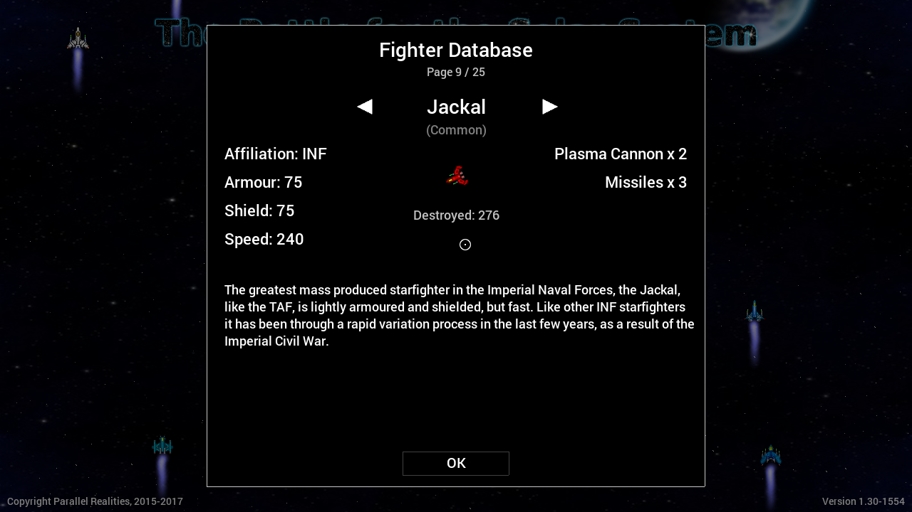

Last updated: 12th August 2017
Table of Contents
Introduction
The Battle for the Solar System - The Pandoran War is a 2D space shooter, based on the space opera novels by Stephen J Sweeney. This game is set during the seven year period between THE THIRD SIDE and THE ATTRIBUTE OF THE STRONG, the second and third novels in the trilogy, respectively.
This manual can also be found online at www.battleforthesolarsystem.com/games/pw/manual/index.html.
You can support development of this game by purchasing one of the books in the trilogy: www.battleforthesolarsystem.com/purchase/
Getting started
Before plunging in to the game proper and tackling the missions, it is recommended that you take time to become comfortable with the game mechanics. Upon starting a new game, you will be presented with the galactic map, with Sol being the selected star system. New players should take their time to work through the missions here, to ease themselves in to the game. Here, you engage in a free flight, to get used to the controls, face off against unarmed and weak opponents, and get to grips with the objective system.
Note that the primary control scheme for the game is mouse and keyboard. It is not recommended you attempt to play this game using a trackpad.
Title Screen
This is the first screen that you will see upon starting the game. You may select from the following options:
- Campaign - Start or continue the current campaign.
- Challenges - Go to the challenges section.
- Trophies - View trophies that have been earned. See the Trophies section for more information.
- Stats - View various game statistics.
- Options - Configure various configuration option. See the options section for more information.
- Credits - View the production credits for the game.
- Quit - Exit the game
Campaign
The campaign is the story mode of the game. In this mode, you will progress through various missions, unlocking others as you game. Missions will take place in a number of different star systems, using a number of different starfighters. Progress is fairly non-linear, allowing the player to chose the order in which they will tackle the available missions. On occassion, mostly for story purposes, the game will require all current missions to be completed before more will become available. See below for more details.
Galactic Map
This is the main mission select screen. Here, you can move around and select star systems in which to undertake missions. Star Systems that have missions will emit red circles at regular intervals. Red arrows will also point in the direction of star systems that have missions, but are currently offscreen.
You can scroll around the galactic map by holding down the left mouse button and dragging the mouse (click and drag). To access missions, simply click on a star system that is emitting red pulses.
- Mission indicator arrow - points in the direction of star systems with missions that are currently off screen.
- Number of completed and total missions.
- A star system:
- Blue: CSN star system.
- White: Independent star system.
- Red: Pandoran-occupied star system.
- A star system with missions available.
- Mouse cursor.
Controls
| Mouse cursor | Scroll galactic map |
| Left mouse button | Select highlighted star system |
| Escape | Menu |
Star Systems
The Star System view shows a list of missions available for that star system. In many cases, missions are unlocked as the related or previous missions are completed. The right-hand side of the star system view displays an overview of the mission, including the class of craft the player will be piloting, and the name of the pilot (if applicable), and the squadron to which they belong. To play a mission, highlight it, and then click on Start Mission.
- Star system name.
-
Available mission list.
- Yellow: missions not completed.
- White: missions completed.
- Start Mission button.
- Mission detail.
Controls
| Left mouse button | Select mission / start mission |
| Escape | Return to galactic map |
Missions
Each mission has various objectives that the player must finish in order to complete the mission successfully. The mission ends when the player either successfully completes all the objectives, or is killed (and is not in an Epic mission). Note: there is no friendly fire between those on the same side (in other words, you need not worry about firing upon your team mates, or them hitting you - no damage will be taken).
Mission objectives can be viewed at any time during play by pressing Tab. Objectives will need not be completed in order. It is also possible for an objective (and subsequently the entire mission) to be failed if they are not met: for example, failing to prevent the escape of a target, or the destruction of a vessel the player was charged with protecting.
The player controls their craft by using the mouse. The fighter will orientate itself in the direction of the mouse cursor. Pressing the right mouse button will cause the craft to accelerate in the direction it is facing. Note that it is possible to turn and face a direction, while retaining the present course. As such, the player is able to strafe. To brake, press [S] on the keyboard.
To fire the craft's guns (should it be equipped with some), press the left mouse button. The craft will fire in the direction of the mouse pointer. Missiles can be fired by pressing the middle button of the mouse. Unlike standard guns, missiles are limited, and also require a target to be fired at (see Combat for more information).
From time to time, message boxes will appear. These will carry important communication messages, progress updates, and chatter from your fellow pilots, regarding recent events. They're all worth paying attention to.
- Player craft.
- Mouse pointer.
-
Player attributes:
- Green: Armour
- Blue: Shield
- Purple: Boost
- Orange: ECM
- Selected weapon.
- Number of missiles.
- Message box.
Controls
| Mouse cursor | Orientate craft |
| Right mouse | Accelerate |
| S | Brake |
| Tab | Display objectives |
| Escape | Menu |
(note: some controls can be changed in the options screen)
Combat
It is rare for missions not to involve any combat. The player will automatically lock on to the closest enemy to them, switching to a new target if the current one is destroyed. The player can also press [A] to cycle targets.
A red box will appear around the current target, and an arrow around the player's craft will point in the target's direction. The name of the target and its distance from the player will also be displayed in the upper right of the screen. Targets can be destroyed by shooting them with your guns, or by firing missiles at them.
Shields
Most fighters, including the player's, are equipped with an energy shield. Unlike armour, this shield will recharge over time, and must be depleted entirely before the armour takes damage. Be aware that shields are extremely vulnerable to lasers. If a shield is hit by a laser blast and is depleted completely, it won't begin to recharge for 10 seconds, leaving the craft unable to rely on them for added protection.
Missiles
Missiles are fast, and chase after their targets for quite some time, finally causing a tremendous amount of damage on impact. A missile can only be fired if the player has missiles remaining, and the target is within range. When their route is clear, missiles rarely fail to hit their target, which can be very troublesome for the player if one is loosed against them. The player can instantly destroy any incoming missiles by using their ECM (activated by pressing [D]). The ECM must recharge whenever it is used (a duration lasting several seconds), and therefore should only be used when it is needed.
Boost
Unlike the AI craft in the game, the player has the ability to Boost (unrestricted by craft type). Boosting provides a temporary sudden burst of speed, lasting less than one second. It is highly useful for escaping dangerous situations, and, on occassion, outrunning a missile for long enough to allow the ECM to recharge. Once used, the Boost must spend several seconds recharging. Boost is activated by pressing [W].
Radar
The radar displays a number of coloured blips, with the player in the center. There are three levels of zoom available. The radar zoom can be cycled by pushing up on the mouse wheel.
- Player target indicator:
- Player target:
- Target detail:
- Battle messages
- Radar:
- Radar zoom amount.
- Number of allied craft.
- Number of complete / total objectives.
- Number of opposing craft.
- Green: friendly unit.
- Yellow: current target.
- Red: enemy unit.
- White: mission target.
Controls
| Left mouse | Fire primary guns |
| Mouse wheel down | Switch main cannons |
| Middle mouse up | Cycle radar zoom |
| W | Boost |
| A | Cycle targets |
| D | ECM |
(note: some controls can be changed in the options screen)
Weaponry
Most craft are equipped with offensive weaponry, with some fighters featuring more than one type of gun.
- Plasma: a standard offensive weapon, that deals heavy levels of damage to shields and armour.
- Particle: a low-power weapon that deal small amounts of damage to shields and armour. Favoured mostly be pirates and insurgents.
- Mag: delivers an electro-magnetic charge to the target, draining its system power and rendering it helpless. Can be used to disable vessels.
- Missile: homes in on target vessels, to deliver tremendous amounts of damage.
Types of Mission
As a 2D shooter, many missions will involve the player needing to gun down enemy craft. However, some missions will also have additional objectives and requirements that must be fulfilled in order for them to be completed. Missions may also come with certain conditions, that, if failed, cause the mission to be failed immediately. Some of the more common types of mission and objectives are described below.
Patrol Missions
These missions involve the player needing to visit a set number of waypoints. The waypoint is activated when the player passes over it. Any surviving team mates will also need to be nearby in order for the waypoint to be considered reached.
Capture Missions
For these missions, the player (or a possible team mate) will need to disable the target craft, using Mag cannons. Such a mission would usually come with the added condition that the targets are not destroyed (a mission failure would result immediately).
Escort Missions
Escort missions involve overseeing the safe journey of a craft from one point to another. The craft in question could be civilian ships, a tug, or a shuttle. A mission failure would immediately follow the destruction of the asset. In most cases, the player will be responsible for taking the targets to the Extraction point.
Rescue Missions
Rescue missions involve ensuring that a stranded or disabled craft is safely transported to an extraction point. The player may or may not be charged with controlling the tug responsible for the task. See the section on Tugs for more information.
Epic Missions
Epic Missions are special types of mission. Typically, if the player's craft is destroyed during play, the mission will be failed. However, in Epic Missions the player will be given the chance to select a new craft to pilot upon the destruction of their current one. In many cases, the number of times the player can switch pilots will be limited. This will continue until no more craft are available to the player, or the player runs out of available pilots, which ever comes first. Epic Missions are also characterised by the number of active participants. There may be dozens of craft battling at once, victory going to the side to eliminates all their opponents. Note that even though there may be over 100 craft available to each side, only a certain number of these (for example, 32) will be present in the battle. Other craft will arrive as each side takes losses, to shore up the numbers. Some Epic Missions will also require the player to destroy a certain number of opponents before the end of the engagement.
Challenges
Challenges are a special game mode which allow you to undertake missions with particular goals that need to be met. These missions enforce restrictions such as time limits, the use of missiles, and the need to fulfill certain other criteria in order to fully complete the objectives. New challenge missions are unlocked when at least one goal from the previous challenge has been successfully met.
To start challenge mission, click on the numbered mission box and then click on Start Challenge Mission. If the mission is locked, you will not be able to play it until you have completed a challenge from the previous mission.
- Total challenges completed / outstanding
- Page number
- Challenge mission box
- Number of challenges completed / available for this mission
- Indciates this challenge mission is not yet available
- Challenge mission detail
- Challenge objectives
Trophies
The Pandoran War offers an optional achievement award system (like those found on PSN, Xbox Live, and Steam), in the form of trophies. Trophies are earned through various gameplay actions, such as completing missions, defeating enemies, and racking up stats. Earned and available trophies can be viewed in the menu from the title screen, the galactic map, and the challenges menu. A notification will be shown when a trophy is unlocked, sliding in from the left-hand side of the screen. So as not to interupt the game, potentially spoiling a hard-fought mission, notifications are only shown at certain points during the game.
- Earned / Total trophies
- Page number
- Challenge mission box
- A hidden trophy. Will be revealed once requirements are met
- An earned trophy (note the trophy is coloured)
- An unearned trophy (note that it is greyed out)
(note: this is not an online system, and is local to the machine on which the game is saved.)
Misc. gameplay details
Shuttles
Shuttles are unarmed craft that are used to pick up objects found floating around the battle area. Only shuttles have the ability to do this, and some missions will require the player to escort a shuttle to a collection point and back. Being unarmed, they require protection, but will seek to avoid combat and flee on sight of enemy craft. The shuttle may be either player or AI controlled.
Tugs
Tugs are craft that are used to tow stranded or disabled vessels. A tow cable can be attached to the target craft by flying near to it. Note that only one craft can be towed at any one time, and that the tow cable cannot be manually detached. Tugs are very weak craft, having no shields, and only a rapid fire particle cannon for protection. The tug may be either player or AI controlled.
Capital Ships
Captial ships are large, heavily armed craft that are sometimes encountered during missions. They are slower moving than fighters and most other vessels, but are far harder to take down. Capital ships are made up of several different parts: components, guns, and engines. A capital ship can only be destroyed when all of its components are destroyed. Destroying the engines will cause the ship to stop (which at times may help, if it is moving towards a target you are attempting to protect), while targeting the guns will stop it from firing. However, attempting to take on a capital ship single-handed is usually a very bad idea, as, unless you are piloting an ATAF, you will find yourself heavily out-gunned.
Defeat by the Pandorans
During the course of the campaign, you may encounter a message on the galactic map saying that a star system has fallen to the Pandorans. This is all part of the story flow, and there is nothing that the player can do to alter this outcome. Additionally, you may from time to time play a mission (usually an Epic) that is unwinnable. Upon the death of the player (and with the relevant mission objectives having been completed) the mission will automatically end, and return to the galactic map (without it being marked as Failed). This, again, is all part of the campaign flow.
Options
Various game options can be changed:
- Window Size - change the size of the window the game is played in. Note that the game interally renders a resolution of 1280x720, and any changes to the window size will result in the game being scaled up or down.[1]
- Sound Volume - Change the volume of the sounds effects in the game, from 0 (no sound) to 10 (loudest).
- Music Volume - Change the volume of the music in the game, from 0 (no sound) to 10 (loudest).
- Fullscreen - Whether or not to start the game in fullscreen mode.[1]
- Control Configuration - Allows you to configure the controls (see below for more details)
A command line switch also exists to allow a user to specify an arbitary screen size. This can be done with:
./tbftss -size <w>x<h>
Where w is the width of the window and h is the height.
For example, running the game with -size 800x600 will open a 800 x 600 window. Resolutions cannot be made smaller than 1280 x 720 or larger than 3840 x 2160.
[1] - changes to this option will take effect next time you start the game.
Control Configuration
Most of the controls in the game can be tailored to the player's liking, using either the keyboard or the mouse.
To change a control, click on the box and then press the key or mouse button you wish to use. To clear a control, press Backpress. To cancel updating a control, press escape (not that therefore neither Backspace nor Escape can be set as controls). Note that the same key or mouse button can be set for multiple controls. Keys are represented by their name, whereas mouse buttons are donated by "Btn X", where X is the number of the mouse button.
Controls be can restored to their default settings by clicking the "Restore Defaults" button.
Gameplay settings
Some minor gameplay settings can be tweaked in the config.json save file:
- friendlyFire - whether friendly fire between craft of the same side is allowed. 0, Off. 1 On. Default is 0 (off).
- autoSwitchPlayerTarget - whether the player's enemy targeter should automatically switch if the target goes out of a range. 0, Off. 1 On. Default is 1 (on).
- missileReTarget - whether missiles should select a new target if their current one is destroyed. Note that missiles will only make one attempt to do so, before automatically self-destructing. 0, Off, 1 On. Default is 0 (off).
- healthBars - whether or not to show health bars above fighters and other units, in game. 0, Off. 1 On. Default is 1 (on).
To alter a gameplay element, update the setting and restart the game. It is not recommended that you fiddle with these settings unless you are comfortable editing such files, as it could result in the loss of data or the game not working properly.
Fighter Database
The fighter database allows the player to view information about various starfighters in the game, including their armour, shield, and speed ratings, and how many of them have been destroyed by the player (where applicable).
Clicking on the left and right arrows will cycle back and forth through the fighters. All fighter information is available from the start of the game, with no unlocks or encounters required.
Misc. Information
The Pandoran War creates two save game files when run, config.json and game.save. Both files are human-readable and saved in JSON format. The files are stored in:
- Linux: $HOME/.local/share/tbftss
- Windows: $USERPROFILE/tbftss
Note that as the source code for this game is freely available, these settings may have been changed.
$HOME on Linux will be /home/<userId>, where userId is your login username. Typically on Windows, $USERPROFILE is C:/Users/<userId>, where userId is your Windows login.
License
Please refer to the LICENSE and README.md files that came with this game for information on the various copyrights of the source code, graphics, sound, and data. Additionally, you may visit https://github.com/stephenjsweeney/tbftss to get the source code itself, and view the files there.
About
This game is based on the Battle for the Solar System novel trilogy by Stephen J Sweeney. You can learn more about the trilogy by visiting:
www.battleforthesolarsystem.com
You can contact the author at:
stephenjsweeney@battleforthesolarsystem.com
This is a work of fiction. Names, characters, businesses, places, events and incidents are either the products of the author's imagination or used in a fictitious manner. Any resemblance to actual persons, living or dead, or actual events is purely coincidental. The Battle for the Solar System : The Pandoran War is © 2015-2017, Stephen J Sweeney, All Rights Reserved. The Battle for the Solar System and all related materials (including, but not limited to, characters, setting, and story elements) are © 2009-2017, Stephen J Sweeney, All Rights Reserved.